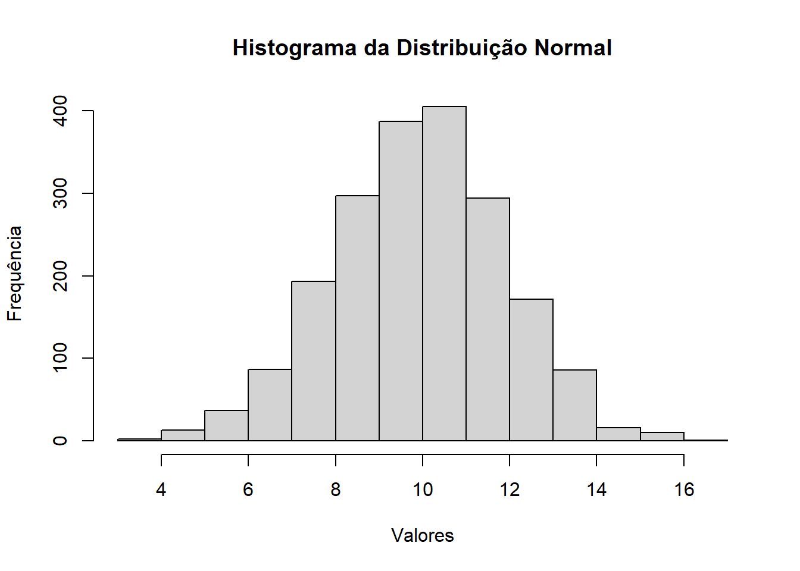

Visualizando dados e modelando em R
Introdução
Vamos iniciar visualizando as variáveis que queremos no nosso banco de dados:
| Variável | Tipo |
|---|---|
| Idade em anos | Numérica quantitativa (discreta) |
| Altura em metros | Numérica quantitativa (contínua) |
| Cinema (gênero favorito) | Qualitativa (nominal) |
| Músicas favoritas | Qualitativa (nominal) |
| Atividade física | Qualitativa (ordinal) |
| Bem-estar | Numérica quantitativa (contínua) |
| Extroversão | Numérica quantitativa (contínua) |
| Neuroticismo | Numérica quantitativa (contínua) |
“Quero ver a associação entre essas variáveis” - Todo estudante com um banco de dados.
Isso é muito comum, mas não é o mais correto.
O mais recomendado é iniciar com uma hipótese, baseado no conhecimento existente (literatura), realizar o projeto do experimento/pesquisa, saber de antemão quais testes irá realizar, para então iniciar a pesquisa.
Nossas perguntas de pesquisa
Hoje vamos realizar algumas análises, e vamos partir de algumas hipóteses pré-estabelecidas:
- A proporção de roqueiros é maior entre fãs de ficção científica vs não-fãs;
- Aqui, nós vamos testar a diferença entre duas proporções. Para isso, usandos o teste qui-quadrado.
- Roqueiros são mais introvertidos:
- Aqui, nós vamos testar a diferença entre duas médias (dos escores de introversão entre os dois grupos - roqueiros e não-roqueiros). Vamos usar aqui o teste t.
- Quanto mais extrovertido, maior o nível de bem-estar;
- Aqui, nós vamos explorar a associação entre duas variáveis quantitativas contínuas. Para isso, usaremos a regressão, já que temos uma variável contínua dependente (bem-estar) e uma independente (extroversão)
- O efeito do neuroticismo no bem-estar desaparece se ajustarmos para extroversão.
- Aqui, vamos usar a regressão múltipla.
No final do livro de Andy Field, temos a seguinte figura, que ajuda a mapear o tipo de teste que queremos utilizar conforme as variáveis que temos.
Juntamente com essas questões nós também vamos explorar algumas maneiras de visualizar os dados, como o box plot, o bar plot, o scatter plot, etc.
Suposições de normalidade
Veja que temos uma última coluna denominada “Assumptions of parametric tests”, sempre para quando o desfecho é uma variável contínua.
A suposição de normalidade dos dados é uma característica importante para podermos utilizar os testes denominados paramétricos.
O quê isso significa?
A distribuição normal é caracterizada por uma curva de sino simétrica.
A distribuição normal é importante na estatística porque muitos fenômenos naturais e artificiais seguem essa distribuição.
Essa distribuição é definida pela seguinte fórmula
\[ f(x) = \frac{1}{\sigma \sqrt{2\pi}} e^{-\frac{(x - \mu)^2}{2\sigma^2}} \]
Nesta fórmula, \(x\) representa um valor específico, \(\mu\) é a média e \(\sigma\) é o desvio padrão. A constante \(\pi\) é aproximadamente igual a 3.14159.
Assim é uma distribuição normal:
Veja a figura de curvas que não seguem a distribuição normal:
Para avaliar a normalidade dos dados acima, vamos usar o teste de Shapiro-Wilk
# Teste de Shapiro-Wilk
shapiro_test_result <- shapiro.test(amostra)
# Exibir o resultado do teste
print(shapiro_test_result)
Shapiro-Wilk normality test
data: amostra
W = 0.9994, p-value = 0.8077- Como o valor-p (0.92) é maior que o nível de significância comum de 0.05 (ou seja, \(\alpha\) = 0.05), não temos evidências estatisticamente significativas para rejeitar a hipótese (nula, H0) de que os dados não seguem uma distribuição normal.
Hipótese nula e hipótese alternativa
É importante o conceito de hipótese nula e hipótese alternativa. Para cada pergunta, existe uma hipótese nula e uma alternativa.
Considere a questão abaixo:
- Roqueiros são mais introvertidos?
A hipótese nula de a questão é: “A média dos escores de introversão é igual entre roqueiros e não roqueiros”. A hipótese alternativa, por sua vez, contrapõe essa ideia.
Vamos considerar que um teste positivo é aquele com p-valor < 0.05, no qual afastamos a hipótese nula.
Iniciando os trabalhos
# Definindo a pasta de trabalho
# setwd("D:/Documentos/GitHub/r_dcg/aulas/aula_7_visualizando")
# Carregando o pacote necessário
library(tidyverse)── Attaching core tidyverse packages ──────────────────────── tidyverse 2.0.0 ──
✔ dplyr 1.1.2 ✔ readr 2.1.4
✔ forcats 1.0.0 ✔ stringr 1.5.0
✔ lubridate 1.9.2 ✔ tibble 3.2.1
✔ purrr 1.0.1 ✔ tidyr 1.3.0
── Conflicts ────────────────────────────────────────── tidyverse_conflicts() ──
✖ dplyr::filter() masks stats::filter()
✖ dplyr::lag() masks stats::lag()
ℹ Use the conflicted package (<http://conflicted.r-lib.org/>) to force all conflicts to become errors# Carregando os dados
library(readxl)
df <- read_excel("dados_turma_1.xlsx")
# Vamos salvar como df2 o nosso banco de dados sem dados faltantes
df2 <- df |> tidyr::drop_na()
# Modificando os nomes das colunas e salvando o banco
df2 <- df2 |>
rename(
data_preenchimento = `Carimbo de data/hora`,
idade = `Idade (em anos, somente número)`,
altura = `Altura (em metros, casa decimal separada por ponto)`,
cinema = `Gênero cinematográfico preferido`,
musica = `Gênero musical preferido`,
atividade_fisica = `Quantos vezes por semana, em média, você pratica atividade física?`,
otimismo = `Tenho me sentido otimista em relação ao futuro`,
utilidade = `Tenho me sentido útil`,
tranquilidade = `Tenho me sentido tranquilo`,
lidar_problemas = `Tenho lidado bem com os problemas`,
clareza_mental = `Tenho pensado com clareza`,
proximidade = `Tenho me sentido próximo (a) às outras pessoas`,
decisoes = `Tenho sido capaz de tomar as minhas próprias decisões`,
comunicativo = `É conversador, comunicativo`,
depressivo = `É depressivo, triste`,
reservado = `É reservado`,
controle_estresse = `É relaxado, controla bem o stress`,
energia = `É cheio de energia`,
tensao = `Fica tenso com frequência`,
entusiasmo = `Gera muito entusiasmo`,
preocupacao = `Preocupa-se muito com tudo`,
quietude = `Tende a ser quieto, calado`,
estabilidade_emocional = `É emocionalmente estável, não se altera facilmente`,
assertividade = `É assertivo, não teme expressar o que sente`,
temperamento = `É temperamental, muda de humor facilmente`,
timidez = `É, às vezes, tímido e inibido`,
calma = `Mantém-se calmo nas situações de tensão`,
sociabilidade = `É sociável, extrovertido`,
nervosismo = `Fica nervoso facilmente`
)
# Criando variável de identificação e alterando sua posição para o início
df2 <- df2 |>
mutate(id = row_number(), .before = data_preenchimento)
# Identificando os níveis de atividade física e bem-estar
levels_bem_estar <- c("Nunca", "Raramente", "Algumas vezes", "Frequentemente", "Sempre")
levels_ativ_fisica <- c("Não pratico atividade física", "Menos do que três vezes na semana", "Entre três e cinco vezes na semana", "Mais do que cinco vezes na semana")
# Juntando todas as operações de transformação usando o pipe
df2 <- df2 |>
mutate(
altura = as.double(altura),
musica = factor(musica),
cinema = factor(cinema),
atividade_fisica = factor(atividade_fisica, levels = levels_ativ_fisica , ordered = T),
across(otimismo:decisoes, ~ factor(.x, levels = levels_bem_estar, ordered = T)),
across(otimismo:decisoes, as.numeric)
) |>
rowwise() |>
mutate(bem_estar = sum(c(otimismo, utilidade, tranquilidade, lidar_problemas, clareza_mental, proximidade, decisoes)))
# Você consegue manipular os dados de neuroticismo e extroversão?
# Vamos criar um vetor com os níveis da escala
likert_values <- c(
"Discordo totalmente",
"Discordo",
"Não concorco nem discordo",
"Concordo",
"Concordo totalmente"
)
df2 <- df2 |> mutate(across
(comunicativo:nervosismo, ~ factor
(.x, levels = likert_values, ordered = T)),
across(comunicativo:nervosismo, as.numeric))
# Defina colunas para colocar os escores ao contrário
colunas_reverter <- c(
"reservado",
"controle_estresse",
"quietude",
"estabilidade_emocional",
"timidez",
"calma"
)
# Reverter os escores para as colunas especificadas
df2[, colunas_reverter] <- 6 - df2[, colunas_reverter]
# Agora vamos criar as colunas de soma
df2 <- df2 |>
mutate(extroversao = sum(c(comunicativo, reservado, energia, entusiasmo, quietude, assertividade, timidez, sociabilidade)))
df2 <- df2 |>
mutate(neuroticismo = sum(c(depressivo, controle_estresse, tensao, preocupacao, estabilidade_emocional, temperamento, calma, nervosismo)))
# Ótimo.
# Vamos salvar o banco de dados processado?
write.csv(df2, "dados_processados.csv", row.names=FALSE)
# Vamos limpar o ambiente de trabalho para passar para a próxima etapa.
rm(list = ls())Agora, vamos começar com o banco de dados processado, carregar os pacotes exigidos e iniciar a nossa análise.
O objetivo nesta aula é descrever os dados, criar algumas visualizações interessantes e testar algumas hipóteses.
# Carregando pacotes necessários
library(readr); library(DescTools); library(tidyverse); library(psych); library(questionr)
Attaching package: 'psych'The following objects are masked from 'package:DescTools':
AUC, ICC, SDThe following objects are masked from 'package:ggplot2':
%+%, alpha
Attaching package: 'questionr'The following object is masked from 'package:psych':
describe# Carregar o banco de dados processado
df <- read_csv("dados_processados.csv")Rows: 15 Columns: 33── Column specification ────────────────────────────────────────────────────────
Delimiter: ","
chr (3): cinema, musica, atividade_fisica
dbl (29): id, idade, altura, otimismo, utilidade, tranquilidade, lidar_prob...
dttm (1): data_preenchimento
ℹ Use `spec()` to retrieve the full column specification for this data.
ℹ Specify the column types or set `show_col_types = FALSE` to quiet this message.# Vamos primeiro transformar em fator "cinema", "musica", e "atividade_fisica"
levels_ativ_fisica <- c("Não pratico atividade física", "Menos do que três vezes na semana", "Entre três e cinco vezes na semana", "Mais do que cinco vezes na semana")
df <- df |>
mutate(
musica = factor(musica),
cinema = factor(cinema),
atividade_fisica = factor(atividade_fisica, levels = levels_ativ_fisica , ordered = T))
# Veja a estrutura dos dados
str(df)tibble [15 × 33] (S3: tbl_df/tbl/data.frame)
$ id : num [1:15] 1 2 3 4 5 6 7 8 9 10 ...
$ data_preenchimento : POSIXct[1:15], format: "2023-08-11 13:45:33" "2023-08-11 13:45:49" ...
$ idade : num [1:15] 22 20 25 25 23 20 28 20 23 20 ...
$ altura : num [1:15] 1.71 1.79 1.76 1.78 1.77 1.8 1.74 1.82 1.58 1.75 ...
$ cinema : Factor w/ 5 levels "Ação","Drama",..: 3 4 4 2 3 5 3 3 3 2 ...
$ musica : Factor w/ 5 levels "Clássico","Indie",..: 1 4 5 5 5 5 2 4 5 5 ...
$ atividade_fisica : Ord.factor w/ 4 levels "Não pratico atividade física"<..: 4 1 3 3 2 4 2 3 3 4 ...
$ otimismo : num [1:15] 5 4 3 3 3 4 4 3 3 4 ...
$ utilidade : num [1:15] 5 3 3 3 2 4 3 4 2 3 ...
$ tranquilidade : num [1:15] 4 3 2 2 3 3 3 4 3 4 ...
$ lidar_problemas : num [1:15] 3 3 3 2 1 4 3 4 2 3 ...
$ clareza_mental : num [1:15] 4 4 3 3 2 4 4 4 4 5 ...
$ proximidade : num [1:15] 4 4 3 2 2 3 4 3 3 4 ...
$ decisoes : num [1:15] 4 4 5 3 4 5 4 4 2 5 ...
$ comunicativo : num [1:15] 5 4 5 4 1 3 2 3 2 4 ...
$ depressivo : num [1:15] 1 3 4 2 4 2 4 2 4 4 ...
$ reservado : num [1:15] 5 3 2 2 2 1 2 2 2 2 ...
$ controle_estresse : num [1:15] 2 5 4 5 3 3 3 2 3 3 ...
$ energia : num [1:15] 5 2 3 2 1 3 2 3 2 4 ...
$ tensao : num [1:15] 3 4 3 4 3 5 5 2 4 2 ...
$ entusiasmo : num [1:15] 5 4 3 4 1 3 2 3 4 3 ...
$ preocupacao : num [1:15] 3 5 5 4 3 4 4 4 4 1 ...
$ quietude : num [1:15] 4 4 3 2 2 2 2 2 2 2 ...
$ estabilidade_emocional: num [1:15] 3 4 4 3 2 2 3 3 4 2 ...
$ assertividade : num [1:15] 4 3 3 4 1 3 2 2 5 1 ...
$ temperamento : num [1:15] 2 4 5 5 2 3 4 2 4 2 ...
$ timidez : num [1:15] 4 2 1 1 1 2 2 2 1 1 ...
$ calma : num [1:15] 2 4 4 2 2 1 2 3 2 2 ...
$ sociabilidade : num [1:15] 5 4 5 4 2 3 3 2 1 3 ...
$ nervosismo : num [1:15] 2 4 4 5 3 2 3 4 4 1 ...
$ bem_estar : num [1:15] 29 25 22 18 17 27 25 26 19 28 ...
$ extroversao : num [1:15] 37 26 25 23 11 20 17 19 19 20 ...
$ neuroticismo : num [1:15] 18 33 33 30 22 22 28 22 29 17 ...# Vamos tirar algumas colunas que não nos interessam mais:
df <- df %>% select(-otimismo:-nervosismo)
# Vamos gerar algumas estatísticas descritivas com o pacote DescTools
numeric_vars <- df[, sapply(df, is.numeric)]
summary_stats_numeric <- Desc(numeric_vars)
# Agora para as variáveis categóricas
categorical_vars <- df[, sapply(df, is.factor)]
summary_stats_categorical <- Desc(categorical_vars)
dev.off()null device
1 # Você pode também usar o pacote psych, função describe; e para variáveis categóricas a função freq do pacote questionr
psych::describe(df$idade) vars n mean sd median trimmed mad min max range skew kurtosis se
X1 1 15 22.2 2.48 22 22 2.97 19 28 9 0.67 -0.41 0.64psych::describe(df$altura) vars n mean sd median trimmed mad min max range skew kurtosis se
X1 1 15 1.73 0.09 1.75 1.73 0.07 1.58 1.92 0.34 0.01 -0.72 0.02psych::describe(df$bem_estar) vars n mean sd median trimmed mad min max range skew kurtosis se
X1 1 15 23.33 3.83 24 23.38 4.45 17 29 12 -0.2 -1.43 0.99psych::describe(df$extroversao) vars n mean sd median trimmed mad min max range skew kurtosis se
X1 1 15 22.33 6.67 20 22.08 4.45 11 37 26 0.59 -0.32 1.72psych::describe(df$neuroticismo) vars n mean sd median trimmed mad min max range skew kurtosis se
X1 1 15 25.6 5.95 28 25.77 7.41 16 33 17 -0.21 -1.52 1.54questionr::freq(df$cinema) n % val%
Ação 1 6.7 6.7
Drama 4 26.7 26.7
Ficção científica 7 46.7 46.7
Suspense 2 13.3 13.3
Terror 1 6.7 6.7questionr::freq(df$musica) n % val%
Clássico 1 6.7 6.7
Indie 1 6.7 6.7
MPB 2 13.3 13.3
Pop 3 20.0 20.0
Rock 8 53.3 53.3questionr::freq(df$atividade_fisica) n % val%
Não pratico atividade física 2 13.3 13.3
Menos do que três vezes na semana 5 33.3 33.3
Entre três e cinco vezes na semana 5 33.3 33.3
Mais do que cinco vezes na semana 3 20.0 20.0# Vamos transformar algumas variáveis categóricas para fazer algumas análises
df$musica_preferencia <- ifelse(df$musica == "Rock",
"Rock",
"Não-Rock")
df$cinema_preferencia <- ifelse(df$cinema == "Ficção científica",
"Ficção científica",
"Não-Ficção científica")
df$sedentarismo <- ifelse(df$atividade_fisica == "Não pratico atividade física" |
df$atividade_fisica == "Menos do que três vezes na semana",
"Sedentário",
"Ativo")
df$musica_preferencia <- as.factor(df$musica_preferencia)
df$cinema_preferencia <- as.factor(df$cinema_preferencia)
df$sedentarismo <- as.factor(df$sedentarismo)
plot(df$musica_preferencia)
plot(df$cinema_preferencia)
plot(df$sedentarismo)Vamos, agora, fazer algumas visualizações com os dados que temos.
Dados categóricos
Para visualizar dados categóricos, podemos usar o gráfico de colunas:
# Para visualizar o gráfico de colunas, primeiro é necessário gerar uma tabela dos dados em df$cinema
cinema_table <- table(df$cinema)
# Gráfico de colunas
barplot(cinema_table,
main = "Gráfico de barras de preferência de filmes",
xlab = "Cinema",
ylab = "Frequência",
col = "skyblue")# Vamos ver a preferência por ficção científica ou não.
cinema_table <- table(df$cinema_preferencia)
barplot(cinema_table,
main = "Gráfico de barras de preferência de filmes",
xlab = "Cinema",
ylab = "Frequência",
col = "skyblue")# Para criar um gráfico de colunas que mostre a relação entre os grupos, você pode usar a função barplot em combinação com a função table para criar uma tabela de contingência
# Crie uma tabela de contingência entre as colunas 'cinema' e 'ficção científica'
cont_table <- table(df$cinema_preferencia, df$musica_preferencia)
# Defina cores para os grupos de 'ficção científica'
cores <- c("lightgreen", "lightcoral")
# Crie um gráfico de colunas justapostas
barplot(cont_table,
beside = TRUE,
col = cores,
main = "Gráfico de Barras por Grupo de Ficção Científica e Cinema",
xlab = "Preferência musical",
ylab = "Contagem")
# Adicione uma legenda
par(xpd = TRUE)
legend("top", legend = levels(df$cinema_preferencia), fill = cores, bty = "n")Dados numéricos contínuos
Aqui, podemos usar o histograma, um gráfico de colunas justapostas que representam as classes na distribuição.
# nclass me permite ajustar o número de classes desejada
hist(df$idade,
main = "Histograma da Idade",
xlab = "Idade",
ylab = "Frequência",
col = "lightblue",
nclass = 3)Outra maneira é o gráfico de densidade.
# Crie um gráfico de densidade da coluna 'idade'
den <- density(df$idade)
plot(den, main = "Gráfico de Densidade da Idade", xlab = "Idade", ylab = "Densidade", col = "blue")Exercício.
Crie visualizações das outras variáveis.
Exemplo:
den <- density(df$bem_estar)
plot(den, main = "Gráfico de Densidade de Bem-Estar", xlab = "Escore", ylab = "Densidade", col = "blue")Testando as nossas hipóteses
Primeira questão
A proporção de roqueiros é maior entre fãs de ficção científica vs não-fãs;
- Aqui, nós vamos testar a diferença entre duas proporções. Para isso, usandos o teste qui-quadrado.
A medida mais comum e possivelmente mais útil do tamanho do efeito para dados categóricos é a razão de chances (odds ratio). As razões de chances são mais interpretáveis em tabelas de contingência 2 × 2 e provavelmente não são úteis para tabelas de contingência maiores.
# Vamos criar uma tabela de contingência
contingency_table <- table(df$cinema_preferencia, df$musica_preferencia)
contingency_table
Não-Rock Rock
Ficção científica 4 3
Não-Ficção científica 3 5# Realizar o teste do qui-quadrado
chi_squared_test <- chisq.test(contingency_table)Warning in chisq.test(contingency_table): Aproximação do qui-quadrado pode estar
incorreta# Mostrar os resultados
chi_squared_test
Pearson's Chi-squared test with Yates' continuity correction
data: contingency_table
X-squared = 0.058594, df = 1, p-value = 0.8087# Calcular o odds ratio
odds_ratio <- contingency_table[1,1] * contingency_table[2,2] / (contingency_table[1,2] * contingency_table[2,1])
# Mostrar
odds_ratio[1] 2.222222A mensagem de aviso que você recebeu, que se traduz como “A aproximação do qui-quadrado pode estar incorreta”, sugere que o teste do qui-quadrado pode não ser apropriado para seus dados. Este aviso normalmente ocorre quando o tamanho da amostra é pequeno ou quando as frequências esperadas das células na tabela de contingência são muito baixas.
Nesses casos, é aconselhável considerar um teste estatístico alternativo, como o teste exato de Fisher, que é mais adequado para amostras pequenas ou quando as frequências celulares esperadas são baixas. Veja como você pode realizar o teste exato de Fisher em R:
O teste qui-quadrado é mais seguro quando você tem um grande tamanho de amostra (geralmente acima de 100) e as expectativas de frequência nas células da tabela de contingência são razoavelmente altas, geralmente não menores que 5.
# Realizar teste exato de Fisher
fisher_test <- fisher.test(contingency_table)
fisher_test
Fisher's Exact Test for Count Data
data: contingency_table
p-value = 0.6193
alternative hypothesis: true odds ratio is not equal to 1
95 percent confidence interval:
0.1893223 27.6093922
sample estimates:
odds ratio
2.10384 O p-valor >0.05 sugere não haver diferença entre os dois grupos.
O intervalo de confiança indica uma faixa de valores em que o odds ratio verdadeiro provavelmente está. Aqui, o intervalo vai de 0.1893 a 27.6094. Isso significa que, com 95% de confiança, o odds ratio verdadeiro está dentro dessa faixa. Um intervalo que inclui o valor 1 sugere que não há uma diferença significativa nas preferências entre os grupos. O odds ratio estimado é de 2.10384.
Ou seja, as pessoas que preferem ficção científica têm aproximadamente duas vezes mais chances de preferir rock do que as pessoas que não preferem ficção científica. No entanto, como o p-valor é alto e o intervalo de confiança inclui 1, essa diferença não é estatisticamente significativa.
Segunda questão
Roqueiros são mais introvertidos:
- Aqui, nós vamos testar a diferença entre duas médias (dos escores de introversão entre os dois grupos - roqueiros e não-roqueiros). Vamos usar aqui o teste t.
# Separar o conjunto de dados em dois grupos: roqueiros e não-roqueiros
roqueiros <- df[df$musica_preferencia == "Rock", "extroversao"]
nao_roqueiros <- df[df$musica_preferencia != "Rock", "extroversao"]
# Realizar um teste t para comparar as médias dos escores de extroversão entre os grupos
t_test_result <- t.test(roqueiros, nao_roqueiros, alternative = "two.sided")
# Exibir os resultados do teste t
t_test_result
Welch Two Sample t-test
data: roqueiros and nao_roqueiros
t = -2.1867, df = 9.3874, p-value = 0.05535
alternative hypothesis: true difference in means is not equal to 0
95 percent confidence interval:
-13.9427077 0.1927077
sample estimates:
mean of x mean of y
19.125 26.000 Aqui está a interpretação dos resultados do teste t de duas amostras (Welch Two Sample t-test) para comparar as médias dos escores de extroversão entre roqueiros e não-roqueiros:
t = -2.1867: A estatística t é -2.1867. Esse valor representa a magnitude da diferença entre as médias dos grupos (roqueiros e não-roqueiros) em relação à variabilidade dos dados. O sinal negativo indica que a média dos roqueiros é menor do que a média dos não-roqueiros.
p-value = 0.05535: O valor-p é 0.05535, apoiando a hipótese nula.
Hipótese alternativa: true difference in means is not equal to 0: A hipótese alternativa afirma que a diferença real entre as médias não é igual a zero, o que significa que você está interessado em verificar se existe uma diferença significativa entre os grupos.
Intervalo de confiança de 95 por cento (95 percent confidence interval): O intervalo de confiança vai de -13.9427 a 0.1927. O intervalo inclui o valor zero, indicando que não há diferença significativa.
Estimativas da amostra (sample estimates): As médias dos dois grupos são apresentadas como “mean of x” (roqueiros) e “mean of y” (não-roqueiros). A média dos roqueiros é de aproximadamente 19.125, enquanto a média dos não-roqueiros é de 26.000.
Com base nos resultados, o valor-p é ligeiramente maior que o nível de significância comum de 0,05 (é 0,05535). Portanto, não há evidência estatisticamente significativa para afirmar que os roqueiros são mais introvertidos do que os não-roqueiros com base nos escores de extroversão. No entanto, é importante notar que o valor-p está próximo do limite, então, dependendo do contexto e da importância prática, pode ser útil considerar uma análise mais aprofundada ou uma maior amostragem para obter conclusões mais robustas.
Uma maneira de visualizar os resultados é através do box plot:
# Create a boxplot with labels and a title
boxplot(df$extroversao ~ df$musica_preferencia,
xlab = "Preferência musical",
ylab = "Nível de extroversão",
main = "Boxplot of preferência musical vs extroversão")Uma outra maneira de visualizar é através do gráfico de colunas:
# Carregar a biblioteca ggplot2
library(ggplot2)
# Calcular as médias e as barras de erro (vamos usar o desvio padrão como exemplo)
mean_roqueiros <- mean(roqueiros$extroversao)
mean_nao_roqueiros <- mean(nao_roqueiros$extroversao)
sd_roqueiros <- sd(roqueiros$extroversao)
sd_nao_roqueiros <- sd(nao_roqueiros$extroversao)
# Criar um data frame com os dados
data <- data.frame(
Grupo = c("Roqueiros", "Não Roqueiros"),
Media = c(mean_roqueiros, mean_nao_roqueiros),
Erro_Padrao = c(sd_roqueiros, sd_nao_roqueiros) # A diferença não tem erro padrão
)
# Criar o gráfico de colunas
ggplot(data, aes(x = Grupo, y = Media, fill = Grupo)) +
geom_bar(stat = "identity", position = position_dodge(width = 0.9), width = 0.5) +
geom_errorbar(aes(ymin = Media - Erro_Padrao, ymax = Media + Erro_Padrao), width = 0.2, position = position_dodge(width = 0.9)) +
labs(title = "Gráfico de Barras com Médias e Erro Padrão",
x = "Grupo",
y = "Média no escore de extroversão") +
theme_minimal()Exercício:
Testar outras hipóteses de diferença de média entre grupos de preferência de filme, atividade física, etc.
Faça box plots para mostrar essas diferenças.
Terceira e quarta questões
Quanto mais extrovertido, maior o nível de bem-estar;
- Aqui, nós vamos explorar a associação entre duas variáveis quantitativas contínuas. Para isso, usaremos a regressão, já que temos uma variável contínua dependente (bem-estar) e uma independente (extroversão)
O efeito do neuroticismo no bem-estar desaparece se ajustarmos para extroversão.
- Aqui, vamos usar a regressão múltipla.
# Temos que testar a normalidade dos dados que vamos usar
# Teste de Shapiro-Wilk
shapiro_test_result <- shapiro.test(df$extroversao)
# Exibir o resultado do teste
print(shapiro_test_result)
Shapiro-Wilk normality test
data: df$extroversao
W = 0.94896, p-value = 0.5082# Teste de Shapiro-Wilk para neuroticismo
shapiro_test_result <- shapiro.test(df$neuroticismo); print(shapiro_test_result)
Shapiro-Wilk normality test
data: df$neuroticismo
W = 0.90729, p-value = 0.1231# Teste de Shapiro-Wilk para bem-estar
shapiro_test_result <- shapiro.test(df$bem_estar); print(shapiro_test_result)
Shapiro-Wilk normality test
data: df$bem_estar
W = 0.94371, p-value = 0.4313# Ou seja, nossos dados têm distribuição normal. Sinal verde para usar a regressão linear.Veja a distribuição dos nossos dados quantitativos:
Agora vamos testar a nossa primeira hipótese:
# Vamos usar a função lm()
modelo <- lm(data = df, bem_estar ~ extroversao)
# Vamos ver os resutados usando a função summary()
summary(modelo)
Call:
lm(formula = bem_estar ~ extroversao, data = df)
Residuals:
Min 1Q Median 3Q Max
-5.5348 -2.5241 0.4439 2.2567 5.3717
Coefficients:
Estimate Std. Error t value Pr(>|t|)
(Intercept) 16.5856 3.1460 5.272 0.000151 ***
extroversao 0.3021 0.1353 2.232 0.043805 *
---
Signif. codes: 0 '***' 0.001 '**' 0.01 '*' 0.05 '.' 0.1 ' ' 1
Residual standard error: 3.379 on 13 degrees of freedom
Multiple R-squared: 0.2771, Adjusted R-squared: 0.2215
F-statistic: 4.984 on 1 and 13 DF, p-value: 0.0438Interpretação dos Resultados:
O coeficiente de interceptação (Intercept) é de aproximadamente 16.586. Isso representa o valor estimado de “bem_estar” quando “extroversao” é igual a zero.
O coeficiente de “extroversao” é de aproximadamente 0.3021. Isso indica que, para cada unidade de aumento em “extroversao”, espera-se um aumento médio de 0.3021 na variável “bem_estar”.
O valor-p (Pr(>|t|)) associado ao coeficiente de “extroversao” é 0.0438, o que indica que a relação entre “extroversao” e “bem_estar” é estatisticamente significativa a um nível de significância de 0.05. Portanto, podemos concluir que “extroversao” tem um efeito significativo em “bem_estar”.
O coeficiente de determinação (R-quadrado) é 0.2771. Isso significa que cerca de 27.71% da variabilidade em “bem_estar” pode ser explicada pela variável “extroversao”. O R-quadrado ajustado é 0.2215, levando em consideração o número de preditores no modelo.
O F-statistic é 4.984, com um valor-p de 0.0438. Isso sugere que o modelo como um todo é estatisticamente significativo, indicando que a regressão linear é adequada para explicar a relação entre as variáveis.
Agora, vamos criar uma visualização para ilustrar essa relação. Vamos traçar um gráfico de dispersão com a linha de regressão:
# Criar o gráfico de dispersão com a linha de regressão e a sombra de intervalo de confiança
grafico <- ggplot(df, aes(x = extroversao, y = bem_estar)) +
geom_point() +
geom_smooth(method = "lm", se = TRUE, color = "red", fill = "lightblue") + # Adicionar sombra
labs(title = "Regressão Linear com Intervalo de Confiança",
x = "Extroversão",
y = "Bem-Estar") +
theme_minimal()
# Adicionar informações sobre o modelo ao gráfico
texto <- sprintf("Fórmula: y = %.4f + %.4fx\nValor-p: %.4f", coef(modelo)[1], coef(modelo)[2], summary(modelo)$coefficients[2, 4])
grafico_com_texto <- grafico +
annotate("text", x = max(df$extroversao), y = min(df$bem_estar), label = texto, hjust = 1, vjust = 0)
# Visualizar o gráfico com o texto e a sombra de intervalo de confiança
print(grafico_com_texto)`geom_smooth()` using formula = 'y ~ x'Agora vamos testar a questão em sequência.
# Vamos usar a função lm()
modelo <- lm(data = df, bem_estar ~ extroversao + neuroticismo)
# Vamos ver os resutados usando a função summary()
summary(modelo)
Call:
lm(formula = bem_estar ~ extroversao + neuroticismo, data = df)
Residuals:
Min 1Q Median 3Q Max
-4.5075 -2.0452 0.3134 2.4547 3.8395
Coefficients:
Estimate Std. Error t value Pr(>|t|)
(Intercept) 25.6728 4.5417 5.653 0.000107 ***
extroversao 0.2630 0.1158 2.272 0.042282 *
neuroticismo -0.3208 0.1298 -2.471 0.029423 *
---
Signif. codes: 0 '***' 0.001 '**' 0.01 '*' 0.05 '.' 0.1 ' ' 1
Residual standard error: 2.863 on 12 degrees of freedom
Multiple R-squared: 0.5209, Adjusted R-squared: 0.4411
F-statistic: 6.525 on 2 and 12 DF, p-value: 0.01209Nesse caso usamos uma regressão múltipla.
Uma regressão simples envolve apenas duas variáveis: uma variável independente (preditora) e uma variável dependente.
Uma regressão múltipla envolve mais de duas variáveis, incluindo uma variável dependente e duas ou mais variáveis independentes.
Y = β0 + β1X1 + β2X2 + ... + βkXk + ε
Yé a variável dependente.X₁, X₂, ..., Xₖsão as variáveis independentes.β₀é o coeficiente de interceptação.β₁, β₂, ..., βₖsão os coeficientes das variáveis independentes.εé o erro residual.
Você consegue interpretar os resultados da nossa regressão múltipla?
Exercícios
Você consegue testar essas perguntas de pesquisa? Defina a hipótese nula e alternativa, o teste estatístico mais adequado, verifique a normalidade dos dados quando necessário e faça o teste.
- Quem gosta de ficção científica é mais neurótico;
- Quem pratica atividade física tem maiores níveis de bem-estar;
- Quanto mais neurótico, menor o nível de bem-estar.
Outros gráficos disponíveis em R
Para um panorama geral de vários tipos de gráficos disponíveis, visite a R Graph Gallery.
Por exemplo, o gráfico de linhas é interessante para mostrar a evolução temporal de alguma variável, heatmaps são bons para mostrar correlações, e mapas são ótimos para gerar visualizações geoespaciais.
É possível também gerar gráficos interativos com R usando shiny apps. Por exemplo, veja a ferramenta que desenvolvemos para visualizar as probabilidades pré- e pós-teste para a Escala de Sintomas Transversais do DSM-5.